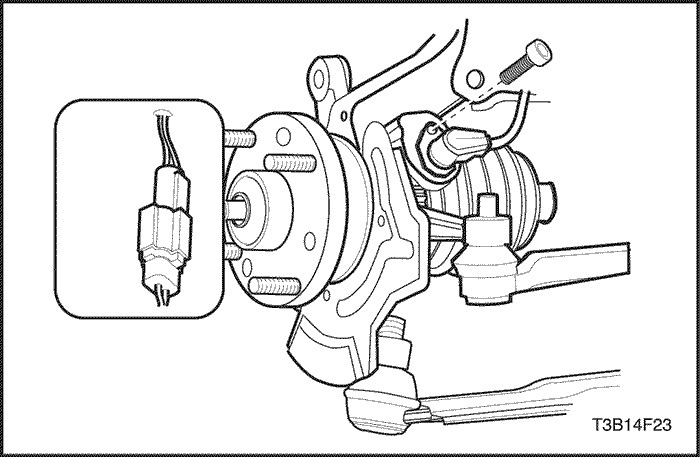
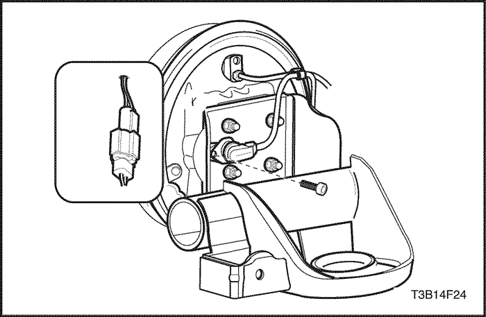
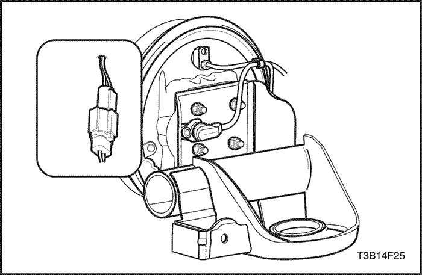

MANTENIMIENTO Y REPARACIÓN
SERVICIO EN EL VEHÍCULO
Precauciones de mantenimiento
Precaución: El líquido de frenos puede irritar los ojos y la piel. En caso de contacto, tome las medidas siguientes:
- Contacto con los ojos - lávelos completamente con agua.
- Contacto con la piel - lávela con agua y jabón.
- Ingestión - consiga asistencia médica inmediata.
Aviso: Cuando desmonte los elementos de sujeción, vuelva a instalarlos siempre en el mismo lugar del que fueron desmontados. Si es necesario sustituir un elemento de sujeción, utilice el elemento de repuesto con la referencia correcta para esa aplicación. Si no dispone del elemento con la referencia correcta, puede utilizar un elemento de sujeción del mismo tamaño y la misma resistencia (o una resistencia mayor). Se solicitarán aquellos elementos de sujeción que no se utilicen otra vez así como aquellos que requieran masilla de fijación de roscas. Cuando se monten elementos de sujeción que requieran un par de apriete, se aplicarán los valores correctos de dicho par. Si no se siguen los procedimientos mencionados anteriormente, podrían ocasionarse daños a las piezas o al sistema.
Aviso: Use solamente líquido de frenos hidráulicos DOT 3. No se recomienda el uso de líquido de frenos DOT 5 (silicona). Se podría empeorar el rendimiento o la durabilidad de los frenos.
Aviso: Evite los derrames de líquido de frenos sobre las superficies pintadas del vehículo, cables o conectores eléctricos. El líquido de frenos ocasionará daños en la pintura y en los conectores eléctricos. Si se derrama algo de líquido de frenos sobre el vehículo, lave la zona con agua para atenuar los daños.
Sistema de purga
Los moduladores de repuesto se envían llenos y purgados. En los procedimientos normales que requieren el desmontaje del modulador, tales como la sustitución de la HECU, hay que procurar que no entre aire en dicho modulador para que sólo sea necesario efectuar un proceso de purga normal. Para este procedimiento, consulte la
Sección 4A, Frenos hidráulicos.


Conjunto de la HECU
Procedimiento de desmontaje y montaje
Aviso: No deje colgando del manguito de freno el conjunto de la pinza de freno. Cualquier obstrucción interna resultante del manguito impedirá una actuación uniforme del freno.
Importante: Para garantizar una frenada uniforme en ambos lados, ambos discos deben disponer de superficies idénticas en cuanto a la uniformidad de la superficie y la profundidad de las marcas. Por esta razón, sustituya los discos de freno siempre por parejas.
- Desconecte el cable negativo de la batería.
- Desmonte el vaso de expansión del sistema de refrigeración. Consulte la Sección 1D, Sistema de refrigeración del motor. Y desmonte la caja de fusibles del compartimento motor.
- Desconecte el conector del cableado del ABS de su enchufe en la HECU.
- Tape el conector y su enchufe con trapos para protegerlos del líquido de frenos.

Aviso: Tenga cuidado de que no entre aire en la unidad hidráulica o en los tubos de freno que salen del cilindro maestro. Si entra aire en la unidad hidráulica, habrá que realizar un procedimiento de purga con un scanner que esté programado para el sistema ABS de la HECU. Mientras que no entre aire en la unidad hidráulica, el sistema no necesitará más que un sencillo procedimiento de purga.
- Desmonte las tuercas racor de los tubos de freno de la unidad hidráulica.
- Quite los tornillos del soporte de fijación de dicha unidad.
- Desmonte el conjunto de la HECU.
Aviso de montaje
Apretar
Apriete las tuercas racor de los tubos de freno hasta 16 N• m (12 lb-pie).
Apretar
Apriete los tornillos del soporte de fijación de la HECU hasta 22 N•m (16 lb-pie).
- Añada líquido de frenos nuevo.
- Después del montaje, purgue el sistema de frenos. Consulte la Sección 4A, Frenos hidráulicos.
- Compruebe la existencia de fugas en el sistema de frenos.
- Se debe tener mucho cuidado de evitar que el líquido de frenos entre en contacto con cualquier superficie pintada para evitar daños a la pintura.

Sensor de velocidad de la rueda delantera
Procedimiento de desmontaje y montaje
- Desconecte el cable negativo de la batería.
- Levante y apoye el vehículo adecuadamente.
- Desenchufe el conector eléctrico del sensor de velocidad de la rueda delantera.
- Desmonte de la mangueta el tornillo y el sensor de velocidad de la rueda delantera.
Aviso de montaje
Apretar
Apriete el tornillo del sensor de velocidad de la rueda delantera hasta 9 N•m (16 lb-pie).

Sensor de velocidad de la rueda trasera
Procedimiento de desmontaje y montaje
- Desconecte el cable negativo de la batería.
- Levante y apoye el vehículo adecuadamente.
- Desconecte del eje trasero el conector eléctrico del sensor de velocidad de la rueda trasera.
- Desmonte los pasacables del sensor de velocidad de la rueda.
Aviso de montaje
Apretar
Apriete el tornillo del sensor de velocidad de la rueda trasera hasta 9 N•m (16 lb-pie).

| © Copyright Chevrolet Europe. Reservados todos los derechos |